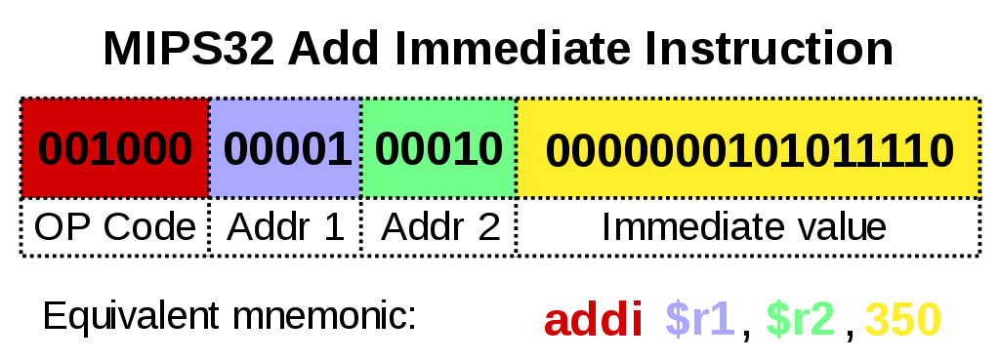

<!doctype html>
<html>
    <head>
        <meta charset="utf-8">
        <meta name="viewport" content="width=device-width, initial-scale=1.0, maximum-scale=1.0, user-scalable=no">

        <title>reveal.js</title>

        <link rel="stylesheet" href="css/reveal.css">
        <link rel="stylesheet" href="css/theme/black.css">


        <style>
            .reveal {
                font-size: 35px;
            }
            /* inlined custom css*/
            .reveal section.full-screen {
                font-size: 30px !important;
            }
            .reveal section.full-screen pre {
                /*width: 100%;*/
                display: contents;
                margin: auto;
            }
            .reveal section.full-screen code {
                display: inline-block;
                max-height: unset;
            }
            .reveal h1 {
              text-align: center;
            }
            .reveal * {
              text-transform: None !important;
              text-align: left;
            }
            .reveal ul,
            .reveal ol {
              display: block;
            }
            .reveal blockquote,
            .reveal pre {
              width: 100%;
            }
            .reveal .centered {
              display: table;
              margin: 0 auto;
            }
            .reveal .center > * {
              display: table;
              margin: 0 auto;
            }
        </style>

        <!-- Theme used for syntax highlighting of code -->
        <link rel="stylesheet" href="lib/css/zenburn.css">

        <!-- Printing and PDF exports -->
        <script>
            var link = document.createElement( 'link' );
            link.rel = 'stylesheet';
            link.type = 'text/css';
            link.href = window.location.search.match( /print-pdf/gi ) ? 'css/print/pdf.css' : 'css/print/paper.css';
            document.getElementsByTagName( 'head' )[0].appendChild( link );
        </script>
    </head>
    <body>
        <div class="reveal">
            <div class="slides">
                <!-- Slides are separated by newline + three dashes + newline, vertical slides identical but two dashes -->
                <section data-markdown data-separator="^\n---\n$" data-separator-vertical="^\n--\n$">
                    <script type="text/template">
[//]: # (to be used with marp, fork git@github.com:H--o-l/marp.git)


# Python


---

## Hoël

TD puis TP sur robots Niryo

---

## Histoire de l'électronique

---

### Electronique analogique


&emsp;&emsp;


---

### Transistor


---

### Transistor

<div class="centered">
  
  &emsp;&emsp;&emsp;
  
</div>

Un transistor c'est un interrupteur.

---

### 1959 - Jack St. Clair Kilby (Texas Instruments) - Circuit intégré

<br/>

1. Fiable
2. Beaucoup plus petit

<br/>


<br/>


&#x21D2; L'électronique est prêt

---

# CPU (Machine de Turing)


<br/>

---

# CPU


Note:
url http://www.righto.com/2015/12/reverse-engineering-arm1-ancestor-of.html

La clock est en haut au milieu, la fréquence est de 1 ou 2 hertz.

---

# CPU


<br/>

---

## Histoire de la programmation

---

### Carte perforée - métier Jacquard - 1801


---

### Assembleur - 1954



---

### Assembleur - 1954

```assembly
.data
UnNom :
      .long 43

.globl _start
_start:
       movl $5, %eax
       movl $0, %ebx
       movl $UnNom, %ecx

top:   addl (%ecx), %ebx
       addl $4, %ecx
       decl %eax
       jnz top
```

---

### BASIC - 1964

<br/>

```BASIC
 10 INPUT "Quel est votre nom ? "; NOM$
 20 PRINT "Bonjour "; NOM$
 30 INPUT "Combien d'étoiles voulez-vous ? "; NOMBRE
 40 LET ETOILE$ = ""
 50 FOR I = 1 TO NOMBRE
 60 LET ETOILE$ = ETOILE$ + "*"
 70 NEXT I
 80 PRINT ETOILE$
 90 INPUT "Voulez-vous plus d'étoiles ? "; ETOILE$
100 IF LEN(ETOILE$) = 0 THEN GOTO 90
110 LET ETOILE$ = LEFT$(ETOILE$, 1)
120 IF (ETOILE$ = "O") OR (ETOILE$ = "o") THEN GOTO 30
130 PRINT "Au revoir ";
140 FOR I = 1 TO 200
150 PRINT NOM$; " ";
160 NEXT I
170 LPRINT
```

---

### C - 1972

```C
int factorielle(int n)
{
    if (n < 2)
    {
        return 1;
    }
    else
    {
        return n * factorielle(n - 1);
    }
}
```

---

### Python - 1989

````py
def factorielle(n):
    if n < 2:
        return 1
    else:
        return n * factorielle(n - 1)
```

---

<!-- .element: class="full-screen" -->

```text
   +------------------------------+-----------------------+
   |                              |                       |  +---+
   |  CPU / Microcontrôleurs      | Unités specialisées : |      |
   |  Langage :  assembleur       | - calcul flottant     |      |
   |  Deux familles : ARM et x86  | - GPU                 |      | Matériel
   |                              | - cryptographie       |      |
   |                              | - réseau de neurones  |  +---+
   +------------------------------+-----------------------+
      ^                                                ^
      ^     Programmes compilés, chargés en mémoire    ^
      ^                                                ^
   +------------------------------------------------------+
   |                                                      |  +---+
   |            Drivers, TCP/IP                           |      |
   |                                                      |      |
   +------------------------------+-----------------------+      |
   |                              |                       |      |
   |                              |                       |      | C
   | OS génériques :              | OS spécialisés :      |      |
   | iOS, Windows, Linux, Android | - temps réel          |      |
   |                              | - supercalculateur    |      |
   |                              |                       |      |
   |                              |                       |      |
   +------------------------------+-----------------------+      |
   |                                                      |      |
   |                Isolement, sécurité                   |      |
   |                                                      |  +---+
   +------------------------+-----------------------------+
   |                        |                             |
   | Langages compilés :    | Languges interprétés :      |
   | - rapides              | - lents                     |
   | - un seul OS à la fois | - cross plateformes         |
   | - stables              | - évoluent rapidement       |
   |                        |                             |
   | C, C++, Go, Rust, Ada  | Python, Java, Javascript..  |
   |                        |                             |
   +------------------------+-----------------------------+
```

---

### Internet

https://internet-map.net

https://www.submarinecablemap.com

https://cybermap.kaspersky.com

---

### Machine learning

---

## Les variables

```py
a = 2
type(a)
# ⇨ <class 'int'> ⇨ un entier

b = "coucou !"
type(b)
# ⇨ <class 'str'> ⇨ une chaine de caractères

a = a + 7

a = a + b # ⇨ Exception : TypeError

unNom_BIZARRE = 2

```

---

## Les conditions

```py
a = 56
if a == 56:
    print("c'est vrai")

if a > 10:
    print("c'est vrai")
else:
    print("c'est faux")
```

---

## Les boucles

```py
tableau = [0, 1, 2, 3, 4, 5, 6, 7, 8, 9]
for i in tableau:
    print(i) # 0, 1, 2, 3, 4, 5, 6, 7, 8, 9

tableau = ['abcd', 'toto', 42, 90, '90']
for i in tableau:
    print(i) # abcd, toto, 42, 90, 90

i = 0
while i < 10:
    print(i) # 0, 1, 2, 3, 4, 5, 6, 7, 8, 9
    i = i + 1
```

---

# Merci !

                    </script>
                </section>
            </div>
        </div>

        <script src="lib/js/head.min.js"></script>
        <script src="js/reveal.js"></script>

        <script>
            // More info about config & dependencies:
            // - https://github.com/hakimel/reveal.js#configuration
            // - https://github.com/hakimel/reveal.js#dependencies
            Reveal.initialize({
                pdfMaxPagesPerSlide: 1,
                // disable controlled
                // width: "100%",
                height: "100%",
                // margin: 0,
                // minScale: 1,
                // maxScale: 1,

                fragmentInURL: true,
                progress: true,
                slideNumber: true,
                history: true,
                center: true, // align vertically
                dependencies: [
                    { src: 'plugin/markdown/marked.js' },
                    { src: 'plugin/markdown/markdown.js' },
                    { src: 'plugin/notes/notes.js', async: true },
                    { src: 'plugin/highlight/highlight.js', async: true, callback: function() { hljs.initHighlightingOnLoad(); } }
                ]
            });
        </script>
    </body>
</html>
